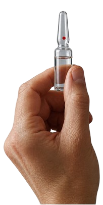
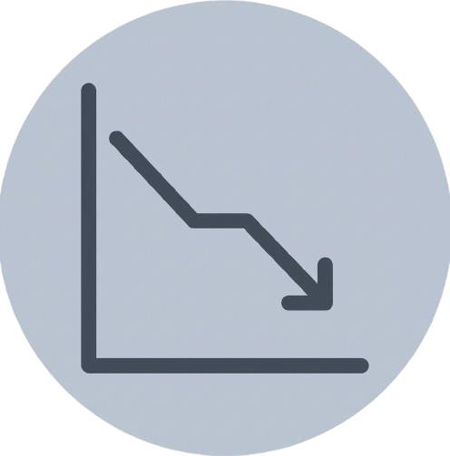
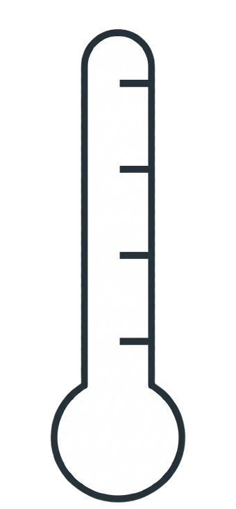
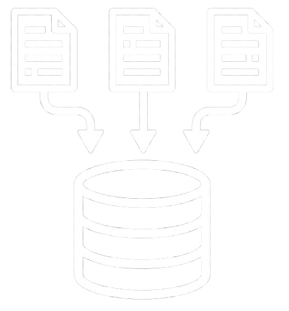

Monitore sua cadeia de
frio em tempo real
no monitoramento da cadeia de frio.
Sua empresa sofre com:
.webp)
 Problemas de monitoramento?
Problemas de monitoramento?
 Frigórificos parando de funcionar?
Frigórificos parando de funcionar?
 A cadeia de frio sendo esquecida?
A cadeia de frio sendo esquecida?
Muitas perdas para temperatura?
Atraso na respostas de eventos?
SafeLab te AJUDA!

Vacinas precisam ser mantidas dentro de uma faixa adequada de temperatura. Alteração não são visíveis, um dano silencioso alastra e destrói a integridade dos imunobiológicos. O acompanhamento contínuo é essencial para a evitar danos graves.
A variação de temperatura pode destruir a sua vacina sem que você perceba
Monitoramento
 manual
manual
Dificuldade de acompanhar a temperatura dos equipamentos de forma contianua
Variações
 térmicas
térmicas
Alterações fora da faixa segura podem comprometer as vacinas.
Perdas &

custos
Falhas na conservação podem gerar descartes de doses e prejuízos operacionais
Apresentamos nossa solução
Cada etapa do sistema conecta a leitura do sensor à informação apresentada.

Sensor de
temperatura
Medição
contínua com
sensor LM35

Coleta dos
dados
Arduino UNO
R3 capta as
leituras.

Banco de
dados
Registros
armazenados em
SQL.

Processamento
Tratamento e
análise das
informações.

Dashboard
SafeLab
Visualização
clara e
organizada

Alerta ao
responsável
Sinalização
no painel
diante de
variações